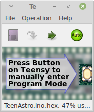
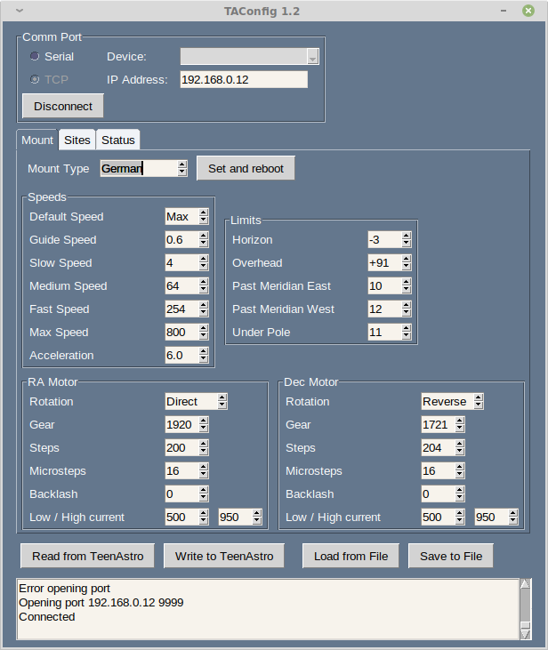

TeenAstro Flashing and Configuration
Flashing
To flash (download) the firmware on both processors, you can either use the TeenAstroUploader application (Windows only), or use directly the tools provided by the board manufacturers.
Flashing the Main Unit through USB with the Teensy uploader
The Teensy uploader, is available for Windows, MacOS and Linux. In all cases, it is possible to program the microcontrollers as standalone (when unplugged from the TeenAstro PCB) through a microUSB port.
After assembly, the Teensy on the Main Unit can also be programmed using the same tools through the USB port on the front panel
On Linux, you need to copy the 00-teensy.rules to the /etc/udev/rules.d folder as explained on the web site.
Launch teensy, select the firmware file in HEX format, and hit the reset button on the board

If the reset button is not accessible, you can also reset it by software by launching teensy_reboot. Note that teensy_reboot is installed by default when using platformio. If you don't use platformio, post a message on the TeenAstro help group.
Flashing the SHC through USB and through Wifi
The processor on the SHC is an ESP8266, on a board called Wemos D1 mini.
It can be programmed with a tool called esptool.py, available here. First remove the Wemos board from the SHC, then use the micro USB connector to connect to your computer.
Once the Wemos is programmed, it is easier to flash through the web server interface, so that there is no need to open the case.
Configuration
These utilities allow to view and change the configuration of the mount (motor parameters etc.)
For Windows, use TeenAstroConfig.exe
For Mac OSX and Linux, use TAConfig.py

TAConfig version 1.2 (only works with TeenAstro firmware 1.2 and above) combines the configuration with some of the features from the web server (site management, status display)